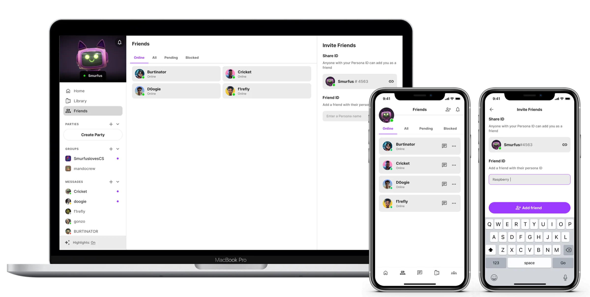
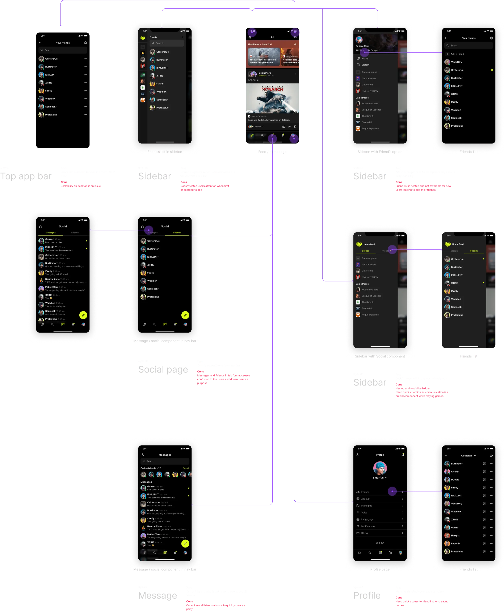
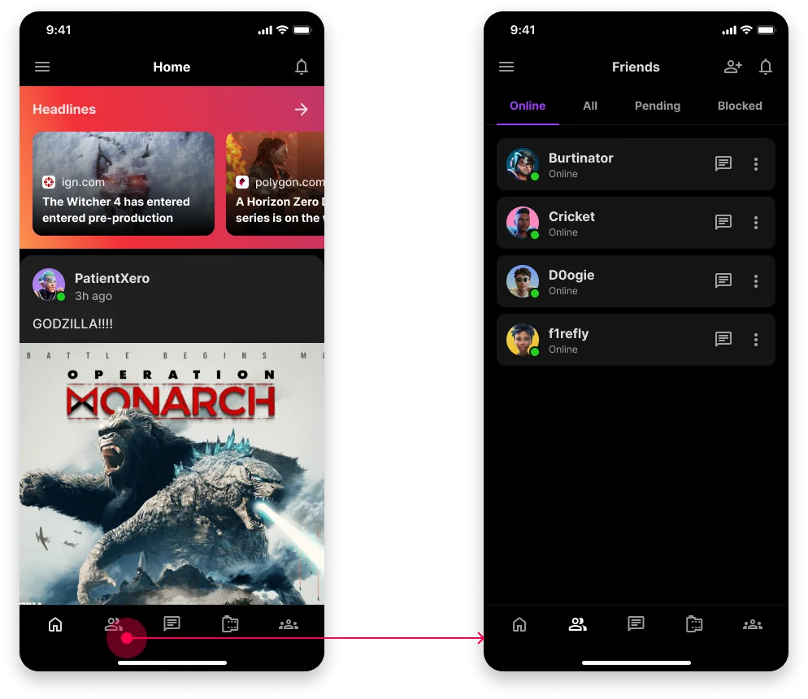
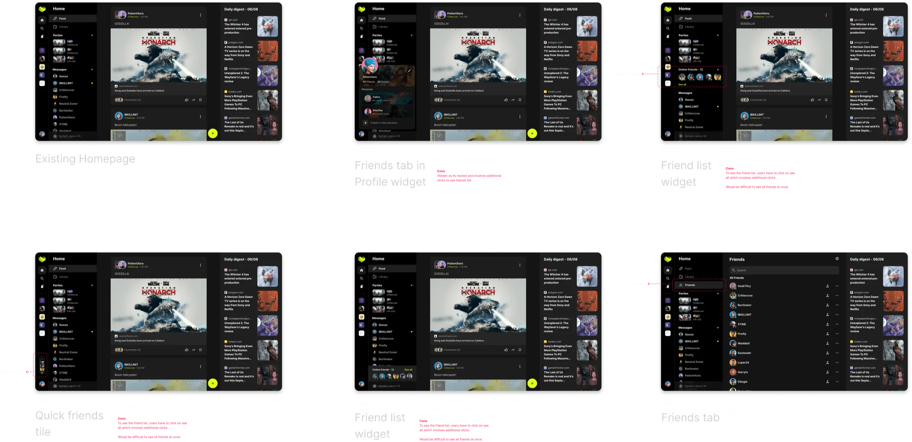
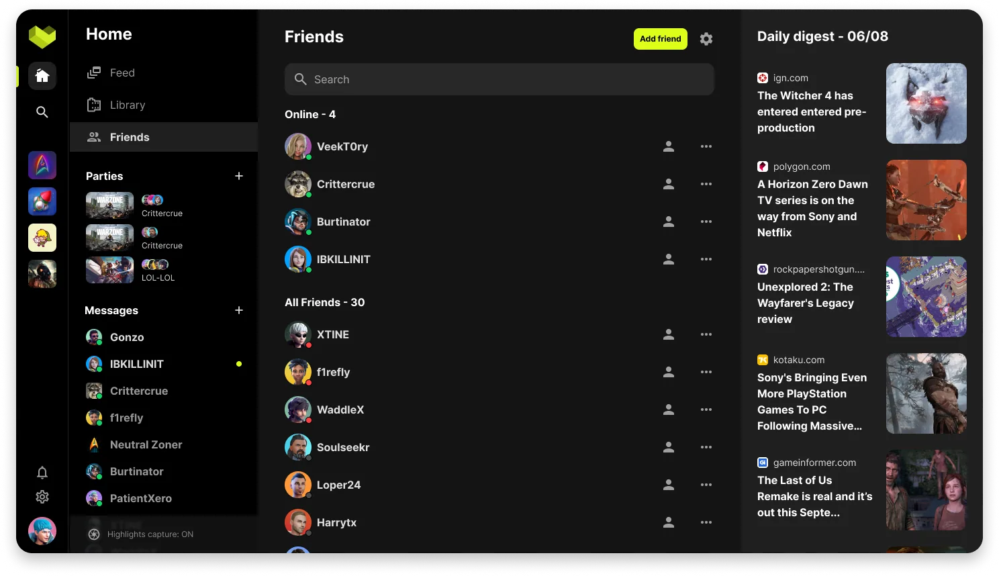
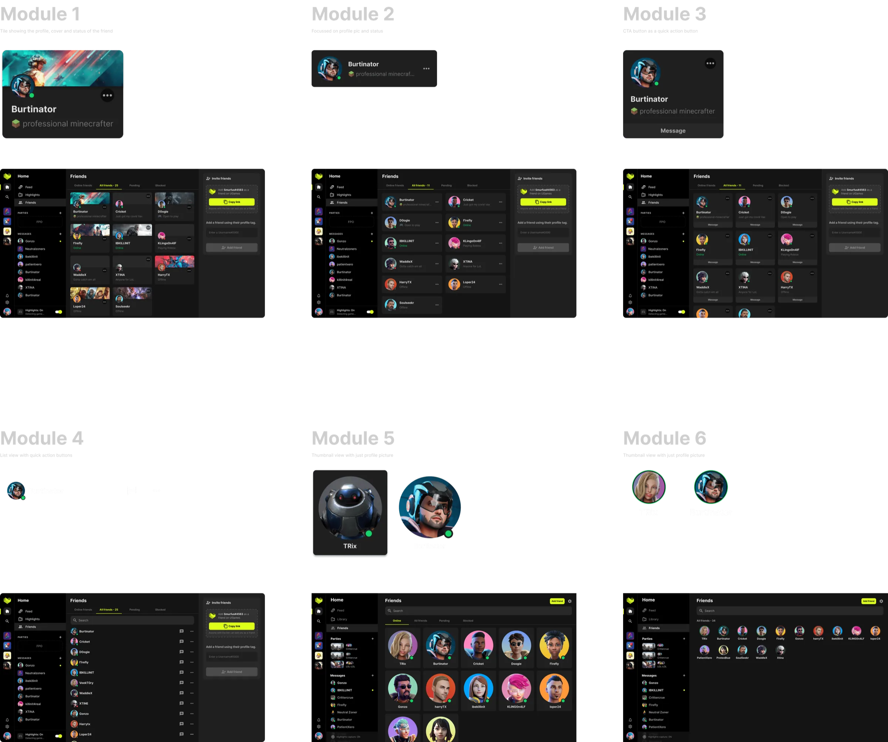
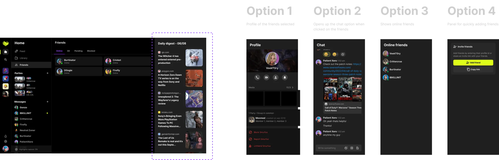
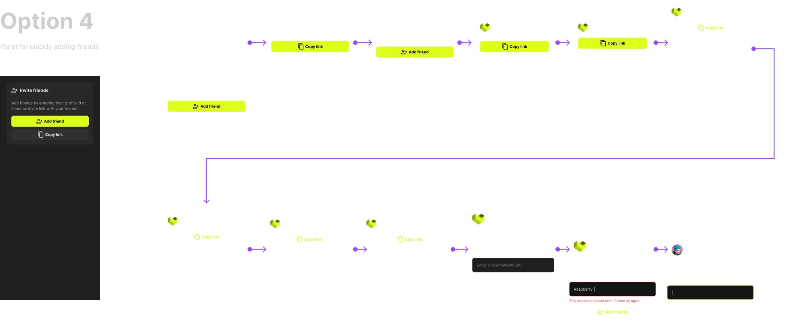

FRIEND MANAGEMENT
Quick way to manage social connections

Problem
Rabble's distinctive clip-capturing feature initially attracted users, but the absence of a community aspect led to declining interest over time. Gamers were eager to connect with like-minded individuals and enhance their overall gameplay experience, highlighting the need for a stronger social component
Business objective
Rabble need a robust friend management system to grow the network of gamers and gaming communities thus increasing the number of users and their engagement.
PROBLEM STATEMENT
Gamers need a way to easily connect with friends for rich experience and effectively manage their social connections to promote a safe and inclusive gaming community.
User goals
During the research phase, I worked with UX researcher to conduct surveys and interviews to idenitfy user needs for a gaming platform like Rabble.
01
Connecting/sharing with like-minded gamers are the most important motivates for users to adopt.
02
Participants need more information about their friend’s status (e.g. what they are doing, what game they are playing).
03
Users want to have the option to create parties directly from the list of friends, friend’s tab or the feed.
Design principles
Foster saftey and inclusion :- Rabble is a community for each and every gaming enthusiast irrespective of their gender, caste, culture, and preference. We will ensure that users can chose who they want to be on Rabble.
Gaming first :- Our user experience will speak directly to game enthusiasts and their unique experience. Our visual design will embody and celebrate the gaming aesthetic.
Enhance (Dont interfere) :- Rabble would always strive to enhance the experience of gamers on our platform and provide new ways to engage with each other.
Layout explorations
I started exploring the friend management panel on mobile first as its challenging to accommodate such a huge feature on a small screen space. After reviewing with designers and stakeholders, I came up with several different options for users to manage their social connections
Mobile

Entry point for mobile
After reviewing the options with the team and users, we decided to include friend list in the navigation bar as it was crucial for a product like Rabble in its early phase to have a huge community. With friend list easily accessible in the navigation bar, users can quickly add and manage their social connections.

Desktop
Similarly after finalizing the mobile layout, I explored various layouts and entry points for friend list on desktop version.

Option E works well as it provide a quick way for users to manage their social connections quickly. Similarly it adapted well on the mobile device too.

Diving deep - Friend tile explorations
After validating the desktop and mobile layout with, I started exploring various ideas for friend's tile ensuring simple user experience and delightful interactions. I explored several ways of showing friends tiles in the friend management tab.

Limitations
All the options were highly regarded for their unique features and effectiveness in meeting functional requirements. While the team especially favored Module 1, Module 2 was selected for implementation due to its ability to reduce engineering effort and be executed within a shorter timeframe. Module 1 was planned to be realeased with 3D avatars.
Module 2 is easily adaptable on smaller devices such as mobile, allowing for ample space to include maximum details.
As Rabble is built using Unity, accurately implementing grid management in Rabble, requires significant attention and effort from engineers.
Driving consistency
Once the central layout for friend management was finalized, I worked on making the right rail more cohesive and consistent with the left content.

Iterations
I refined and simplified the right rail module to reduce noise and enable users focus on the primary objective of the component.

Final Prototype
After several iterations and simplifying the design based on UX and technical constraint I came up with this final design serving our first phase MVP and also getting gamers excited with 3D avatars and how it might shape the future product direction.
Final design
Final version of the design included a change in the left navigation rail due to business requirements. It didnt change much of the design in desktop but on mobile, the new header placement affected the friend management screen.